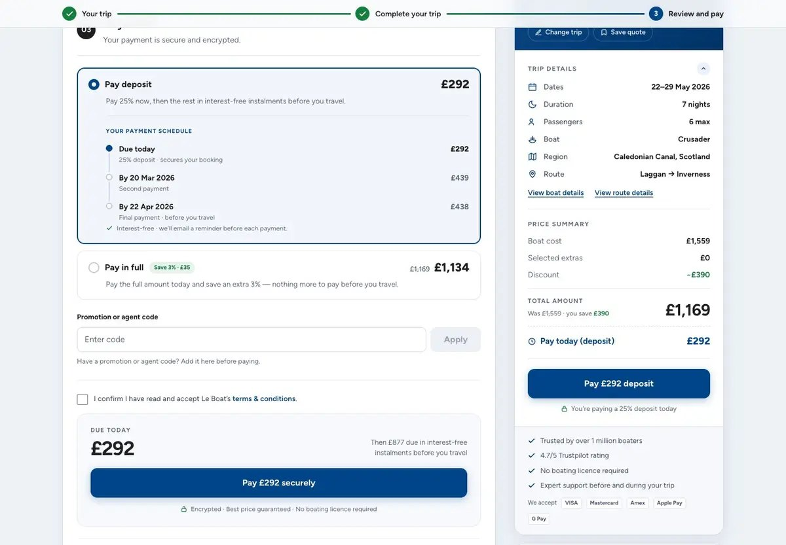
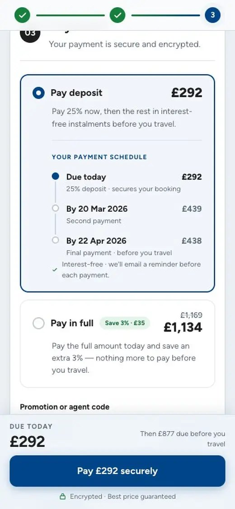
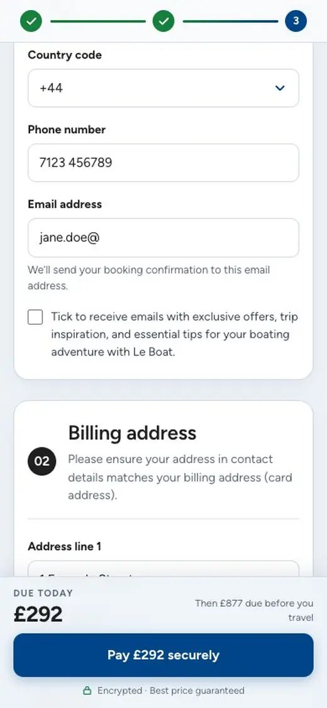

Checkout, rebuilt around the decision
Le Boat sells week-long canal holidays on boats you drive yourself, no licence needed. It is a considered, seasonal purchase. Emerald Star, its sister brand, runs on the same checkout. Both belong to Travelopia, a group of travel brands I design for.
Booking a boat holiday ends in a long form with twenty optional extras in it. The rebuild treats each step as a decision someone has to make, and gives two brands one set of tokens to make it in. Designed and built in one week, live ten days later.

What changed
Extras were an accordion of twenty things. Now each group shows its best two with the rest behind a count, so the page is scannable without hiding the category. The payment step stopped asking for a card type and started asking the only question that matters: deposit now, or all of it.
Between two steps the server re-prices the booking and it takes three to five seconds. The waiting state says so in words instead of spinning.

Fifteen ways a booking breaks
The failure states were specified as their own piece of work rather than swept up at the end. An extra that sold out while you browsed, a card that declines, a field that will not validate, a session that expires mid-flow. Each one gets the same three things: what happened in plain words, what it means for the booking, and the one action that gets you moving again. Nothing dead-ends.


Two brands, one sheet of tokens
The sister brand is not a fork. It is the same components with its own values for the brand roles, so a fix to the checkout reaches both and the second brand costs nothing to keep improving. Both clear a WCAG 2.1 AA sweep at desktop and phone with no contrast violations, and the sweep runs on every build.
What the decision log says
Twenty decisions, each recorded with who agreed to it. Eight were agreed with stakeholders, six were my call with nothing validating them, one was verified only by tooling, one was still unresolved at handover. And one was superseded: we held a bundles idea back to avoid confounding a test, while a bundles experiment was already running in production and nobody said so. It is the most useful row in the table, so it stayed in.
A failure state is not an edge case. It is the part of the product that decides whether someone books again.